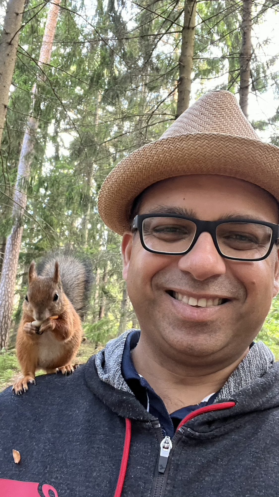
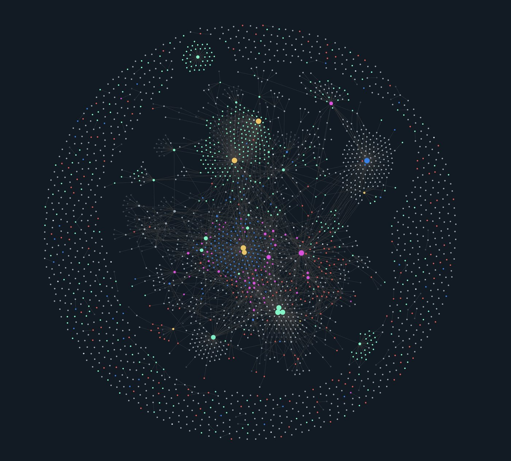
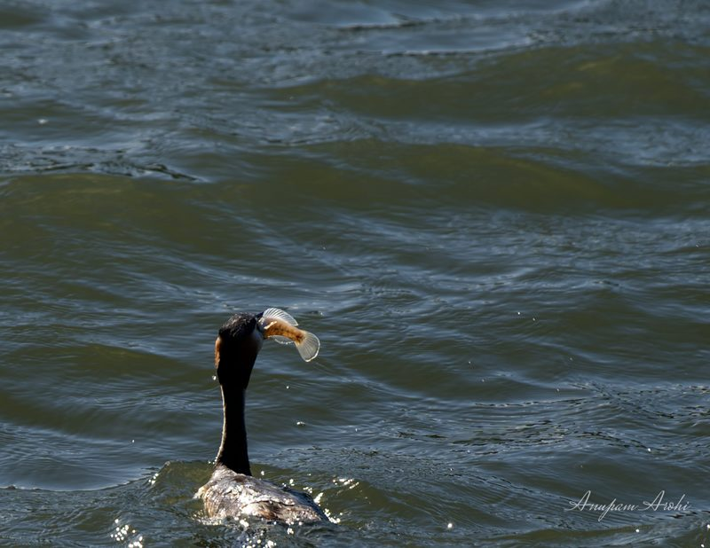
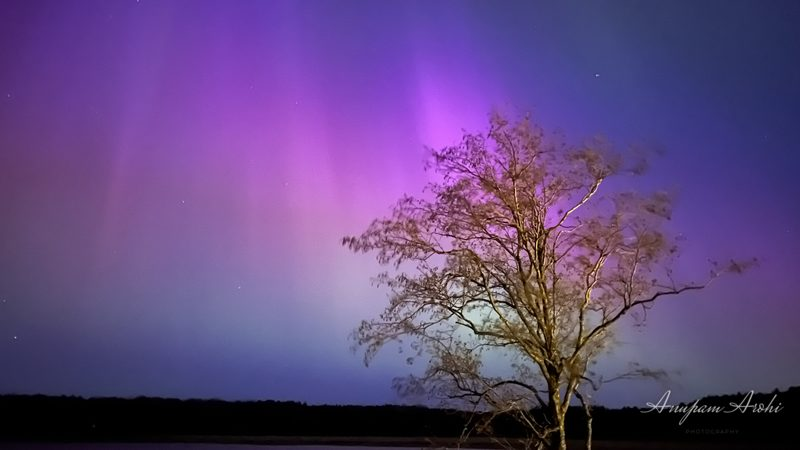

Hello. I feed birds and squirrels, and sometimes they pose for a photograph before leaving. That is most of what you need to know about me, but here is the rest.
I live in the Helsinki area of Finland, where nature spots are never far away. I have been hunting northern lights from here since 2011, and pointing a camera at whatever else turned up along the way: birds, halos, insects, and objects found where they lay.
The rest of my leisure time goes to catching up with people, badminton, poker and chess, flying Indian kites, making soap bubbles, juicing, playing with bash and git, and learning more about computing, business and psychology.
Community
Since 2019 I have facilitated a weekly public guided meditation group in Helsinki. It is free, it is open to everyone, and anyone can join. Here is what an evening looks like, and how to come along.
Work
I am a Product Owner at ABB Drives in Helsinki, with more than 25 years in technology behind me. The professional version of me lives on LinkedIn.
In 2014 I wrote Live Version, versioning that runs itself, for the messy experimental work that never deserves a team commit. I kept commenting out code I was not ready to delete and zipping folders I was afraid to lose, and neither habit was serving me. LV has been quietly backing up my work ever since, and I still develop it.
Second brain
I keep a second brain in Computer, and have done it for a few years now. It runs on my own bend of PARA (Projects, Areas, Resources, Archive), the method Tiago Forte sets out in Building a Second Brain. Below is the whole vault seen from above. Every dot is a note, every line a link I made because two ideas are connected, and the bright clusters are the topics I work on regularly. If you run one of these too, in Obsidian or Notion or something else, let's grab a coffee together and share our experience

Elsewhere
-

Photographs
Thirty-eight photographs in six series: auroras and halos over southern Finland, birds, macro work, and found objects.
-

Aurora guide
Everything I have learned about catching the northern lights from southern Finland, written down so you can catch them too.
-
Books
The books that inspired me, with my ratings and whatever I wrote about them. Built from my Goodreads shelves, not by hand.